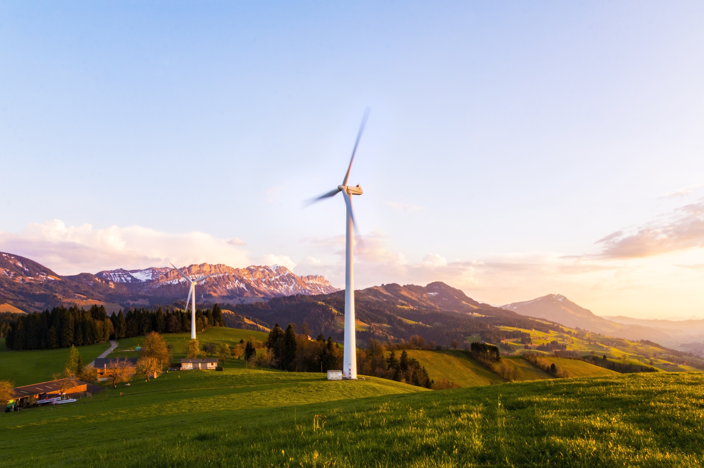

Gráfica Ekofootprint
José Cláudio Fonseca abriu a gráfica Ekofootprint pensando em diminuir esse problema. Seu negócio utiliza máquinas que imprimem o papel com cera, que é mais sustentável. O papel também é feito à base do bagaço da cana.
Só para você ter uma ideia, uma impressora com tinta normal gasta 12 cartuchos e imprime 35 mil folhas. A de cera usa apenas 4 e imprime 50 mil. Além de gerar menos poluição, o resultado rende economia.

Trivellato Geradores
Algumas empresas que adotaram práticas sustentáveis fazem dela uma oportunidade de negócio. É o caso da Trivellato Geradores.
A empresa, localizada em Uberlândia, desenvolveu um motor para geradores que utiliza biogás proveniente de dejetos bovinos e suínos. O produto contribui para que as fazendas sejam autossuficientes em energia elétrica. A economia chega a R$ 15 mil por mês na conta de energia das fazendas.
Arga Vidros
Célio Mendes era dono de um bar em João Pinheiro, Norte de Minas, há mais de 15 anos. Preocupado com os cascos de vidros de refrigerantes e cervejas que eram descartados, procurou as indústrias para tentar vendê-los.
Daí nasceu a Arga Vidros, outra empresa que faz da sustentabilidade seu ganha-pão. O negócio compra e vende vasilhames e redistribui para que não sejam descartados indevidamente.
Célio ainda criou uma moedora de vidros para aproveitar até as embalagens que não podem ser vendidas. Depois de moído, o material é misturado com areia e cimento e se transforma em tijolo, bloco, artesanato, manilha e artigo de decoração para jardinagem.